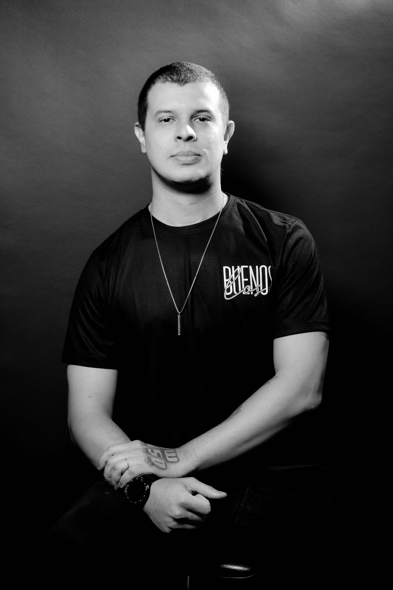
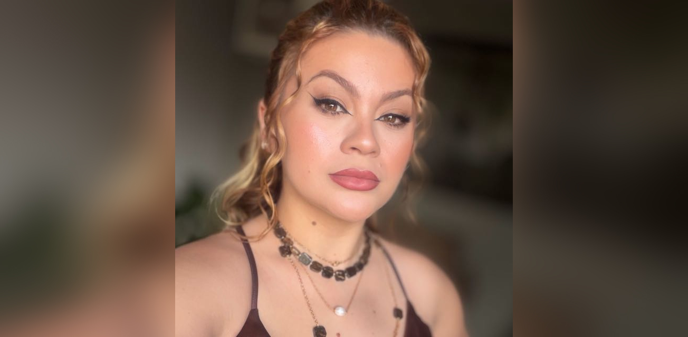

01
Comunicação
Organizar presença digital e tornar o trabalho compreensível.
Do apoio voluntário à estrutura de comunicação integrada: uma parceria que pode crescer junto com a Associação MMA.
Marcas precisam de direção.Uma presença institucional capaz de transformar impacto em reconhecimento, reconhecimento em confiança e confiança em apoio contínuo.
Organizar presença digital e tornar o trabalho compreensível.
Potencializar a Liga MMA e estruturar materiais para parceiros.
Valorizar equipes, voluntários e empresas apoiadoras.
Valores sugeridos para revisão da LosBuenos. Os ciclos são propostas iniciais, não compromissos aceitos. Conteúdos, vídeos e campanhas respeitam o protocolo técnico de aprovação.
Apoio remoto e pontual, conforme disponibilidade.
Sem obrigação de migração. Sem SLA, atendimento diário, filmagens, estratégia recorrente, mídia ou relatório contratado.
Profissionalizar a presença institucional.
Total indicativo em 3 meses: R$ 3.600. Captação presencial não incluída.
Converter reconhecimento em oportunidades de apoio.
Total indicativo em 6 meses: R$ 15.000. Verba de mídia, plataformas e taxas à parte.
Comunicação integrada e fortalecimento institucional contínuo.
Total indicativo em 12 meses: R$ 54.000. Desenvolvimento de plataforma, CRM customizado e rebranding integral sob orçamento.
Os limites são mensais, não acumulativos. Vídeos fazem parte do volume total de conteúdo e não são adicionais.
| Entregas | 00 Voluntário | 01 Presença | 02 Captação | 03 Integrado |
|---|---|---|---|---|
| Mensalidade | R$ 0 | R$ 1.200 | R$ 2.500 | R$ 4.500 |
| Período inicial | 90 dias | 3 meses | 6 meses | 12 meses |
| Conteúdos | Até 4 | 8 | 12 | 16 |
| Vídeos editados inclusos | Não | Até 2 (material fornecido) | Até 4 | Até 6 |
| Sessões presenciais | Não | Não | 1/mês | 2/mês |
| Planejamento | Pontual | Mensal | Mensal | Integrado |
| Design, copy e programação | Sim | Sim | Sim | Sim |
| Relatório | Não contratado | Básico | Completo | Completo |
| Reuniões | Revisão do piloto | 1/mês | 1/mês | 2/mês |
| Liga MMA | Apoio pontual | Comunicação | Estratégia | Evolução |
| Meta Ads | Não | Não | Até 2 campanhas | Até 4 campanhas somadas com Grants |
| Google Ad Grants | Não | Não | Avaliação | Gestão se aprovado |
| Landing page | Não | Não | 1 inicial | Evolução |
| Portfólio / selo empresarial | Não | Não | Estrutura inicial | Comunicação contínua |
| Endomarketing | Não | Não | Pontual dentro da pauta | Sim |
| Branding | Não | Direção visual | Posicionamento | Direção e estudo de percepção |
| Gamificação | Não | Não | Conceito a avaliar | Concepção, sem sistema |
O nível voluntário pode ser uma contribuição autônoma. A transição para serviço pago, se desejada, será feita por decisão expressa e contrato separado.
Briefing, autorização de canais, materiais e pautas prioritárias.
Publicações, leitura dos sinais de engajamento e ajustes dentro do nível escolhido.
Revisão conjunta do piloto e discussão sobre continuidade, sem obrigação comercial.
Cronograma orientativo do piloto, sujeito à disponibilidade voluntária. Planos pagos têm planejamento e acompanhamento conforme o escopo contratado.
O objetivo é construir uma relação sustentável, com limites claros e responsabilidade compartilhada.
Executar o escopo aprovado. Nos níveis pagos, organizar calendário, produzir, publicar e acompanhar as entregas definidas.
Disponibilizar conteúdo autorizado, acessos por permissões, dados agregados, responsável por aprovação e canais oficiais de doação.
Sem exposição identificável de crianças ou unidades protegidas. A equipe técnica valida toda imagem e história.
Mídia, impressão, deslocamentos fora da área combinada, hospedagem paga, taxas, terceiros e sistemas complexos não inclusos. Uma rodada de ajustes por peça; extras sob aprovação.
A associação deverá formalizar o voluntariado conforme as regras aplicáveis e validar a origem dos recursos para planos pagos. Doações são recebidas exclusivamente nos canais oficiais da MMA. Não há promessa de resultado financeiro, autorização do Google Ad Grants, incentivo fiscal ou comissão. Qualquer remuneração variável exigirá acordo separado e análise jurídica/contábil. Não há renovação automática presumida. Escopo e valores sujeitos à revisão antes da assinatura.
Branding, conteúdo, audiovisual, performance e web. A gente entra no negócio antes de entrar no Instagram.

Design, branding, direção criativa e performance.

Estratégia, conteúdo, social media e audiovisual.